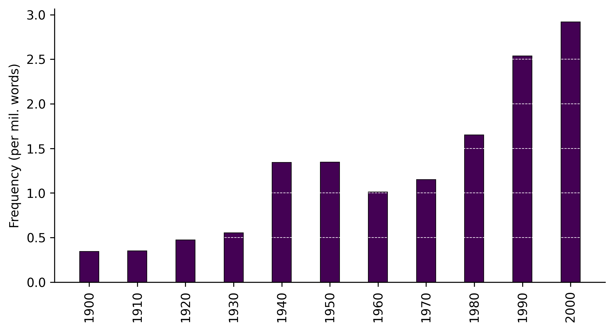

from google_ngrams import google_ngram, TimeSeriesgoogle_ngrams
Fetching data
This package has functions for processing Google’s Ngram repositories without having to download them locally. These repositories vary in their size, but the larger ones (like the one for the letter s or common bigrams) contain multiple gigabytes.
The main function uses scan_csv from the polars package to reduce memory load. Still, depending on the specific word forms being searched, loading and processing the data tables can take a few minutes.
Analyzing data
The package also supports the analysis of time series data using TimeSeries. Specifically, it has a python implementation of Gries and Hilpert’s (2008; 2012) Variability-Based Neighbor Clustering.
The idea is to use hierarchical clustering to aid “bottom up” periodization of language change. The python functions are built on their original R code.
Distances, therefore, are calculated in sums of standard deviations and coefficients of variation, according to their stated method.
Dendrograms are plotted using matplotlib, following the scipy conventions for formatting coordinates. However, the package has customized functions for maintaining the plotting order of the leaves according the requirements of the method.
The package also has an implementation of scipy’s truncate_mode that consolidates leaves under a specified number of time periods (or clusters) while also maintaining the leaf order to facilitate the reading and interpretation of large dendrograms.
All DataFrames are rendered using polars. If you prefer to conduct any post-processing using pandas, please refer to the documentation for converting polars to pandas. Note that conversion requires both pandas and pyarrow to be installed into your working environment.
Installation
You can install the released version of google_ngrams from PyPI:
pip install google-ngramsUsage
To use the google_ngrams package, import google_ngram for fetching data and TimeSeries for analyzing data.
The google_ngram function takes three arguments: word_forms, variety, and by. The first must be passed in the form of a list of strings. That list can include a single word like teenager or lemmas like walk, walks and walked: e.g., ["walk"] or ["walk", "walks", "walked"]. The same principal applies to ngrams > 1: ["teenager is", "teenagers are"]. The first word in an ngram sequence should be from the same root. So the function would fail to process [“teenager is”, “child is”] . The function will combine the counts of all forms in the returned data frame.
The variety argument can be one of: ‘eng’, ‘gb’, ‘us’, or ‘fiction’, for all English, British English, American English, or fiction, respectively.
quiz_df = google_ngram(word_forms=['quiz'], by='decade')
Accessing repository. For larger ones
(e.g., ngrams containing 2 or more words).
This may take a few minutes...
Be patient
Google’s data tables are HUGE. Sometime running into multiple gigabytes for simple text files. Thus, depending on the table being accessed, the return time can be slow. For example, assessing the 1-gram Q file should take only a few seconds, but the 1-gram T file might take a couple of minutes to process. The 2-gram, 3-gram, etc. files are even larger and slower to process.
quiz_df.head()
shape: (5, 4)
| Decade | Token | AF | RF |
|---|---|---|---|
| i32 | list[str] | i64 | f64 |
| 1680 | ["quiz"] | 9 | 0.633208 |
| 1690 | ["quiz"] | 0 | 0.0 |
| 1700 | ["quiz"] | 5 | 0.102997 |
| 1710 | ["quiz"] | 9 | 0.153825 |
| 1720 | ["quiz"] | 12 | 0.119933 |
Data retrieved from the google_ngram function (or any other time series data) can then be analyzed using TimeSeries.
import polars as pl
quiz_ts = TimeSeries(time_series=quiz_df.filter(pl.col("Decade") >= 1900), time_col='Decade', values_col='RF')We can now generate visualizations like a barplot of frequencies by decade:
quiz_ts.timeviz_barplot();
References
Gries, Stefan, and Martin Hilpert. 2012. “Variability-Based Neighbor Clustering.” The Oxford Handbook of the History of English, 134–44. https://doi.org/10.1093/oxfordhb/9780199922765.013.0014.
Th. Gries, Stefan, and Martin Hilpert. 2008. “The Identification of Stages in Diachronic Data: Variability-Based Neighbour Clustering.” Corpora 3 (1): 59–81. https://doi.org/10.3366/E1749503208000075.